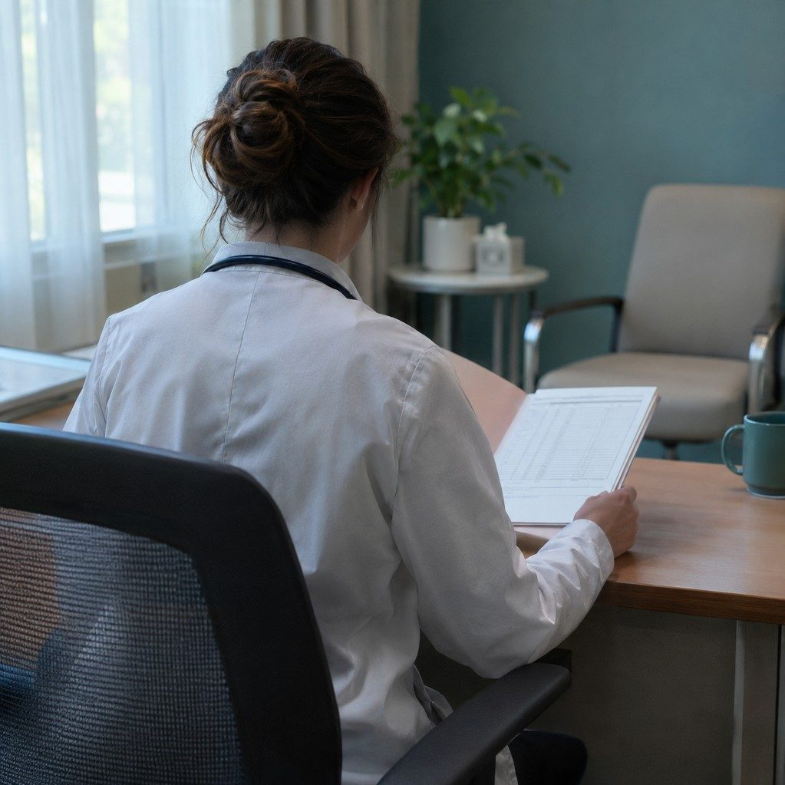
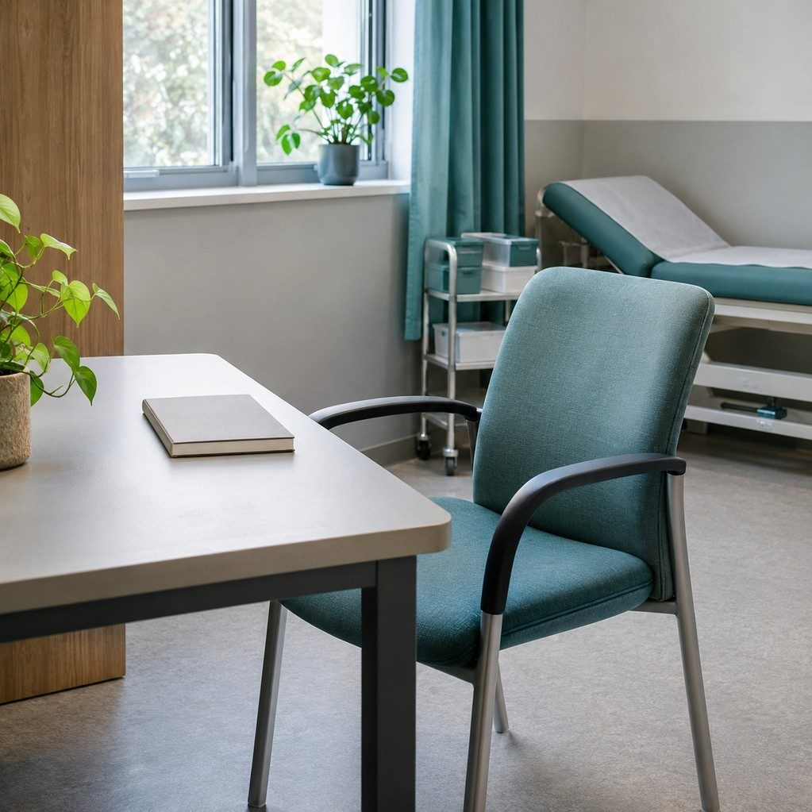

01 / 진료 상담 담당
박서윤
학력·수련
- 진료 상담 관련 교육 이수
- 기본 진료 절차 확인
- 상담 기록 작성 안내
주요 이력
- 진료 전 질문 확인
- 방문 자료 안내
- 다음 일정 전달
의료진과 진료 상담 정보를 안내합니다.
진료 담당자와 상담 준비 사항을 확인해 주세요.


최근 검사 결과와 진료 의뢰서가 있으면 날짜와 검사 항목을 확인할 수 있도록 준비해 주세요. 자료가 없거나 가져오기 어려운 경우에는 방문 전에 전화로 필요한 자료를 문의해 주세요.
현재 복용 중인 처방약과 보충 제품은 이름과 이용 시점을 메모해 주세요. 약 봉투나 처방 내역이 있으면 상담 때 담당자에게 보여 주세요. 복용 방법은 임의로 바꾸지 말고 처방한 의료진에게 확인해 주세요.
다른 의료기관의 진료와 예정된 검사가 있으면 날짜를 함께 알려 주세요. 방문 일정이 겹치거나 변경이 필요하면 예약 담당자에게 연락해 가능한 시간을 확인해 주세요.
이전에 받은 치료에서 불편했던 점이 있다면 시작 시기와 당시 안내 내용을 기억하는 범위에서 말씀해 주세요. 확인하기 어려운 내용은 추측하지 않고 기록을 확인해도 됩니다.
진료에서 확인하고 싶은 질문을 미리 적어 오면 상담 중 차례로 확인할 수 있습니다. 검사나 치료 계획에서 이해하기 어려운 표현이 있으면 설명을 요청해 주세요.
상담 뒤에는 다음 방문 날짜와 준비 사항을 확인해 주세요. 일정이나 자료 준비에 변동이 생기면 대표 전화로 문의해 안내받을 수 있습니다.
약이나 음식에 불편을 겪은 경험이 있으면 해당 항목과 당시 상황을 의료진에게 알려 주세요. 관련 진료 기록이나 검사 결과가 있으면 날짜가 보이도록 준비해 주세요.
새로 시작하거나 중단한 약이 있으면 변경 시점과 처방한 의료기관을 전달해 주세요. 복용 시간과 용량은 상담 전 임의로 변경하지 마세요.
상담 가능 시간, 초진 접수에 필요한 자료, 비급여 항목과 비용은 방문 전에 대표 전화로 확인해 주세요. 문의할 때 희망 방문일과 확인할 내용을 알려 주시면 접수 담당자가 안내합니다.
예약을 바꾸거나 도착 시간이 달라지는 경우 미리 연락해 다음 절차를 확인해 주세요. 온라인 접수는 준비 중입니다. 문의는 010-4894-4905로 전화 주세요.